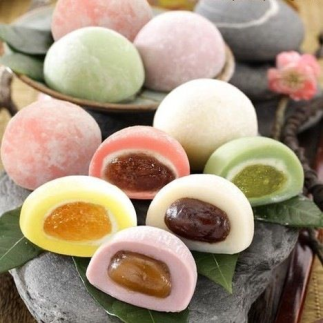

Traditional mochi is a Japanese dessert made of whole rice grains or
glutinous rice that is beaten with a wooden mallet until it becomes a
flexible paste.
Ingredients
Here's what you'll need to prepare mochi,
- Red Bean Paste
- Glutinous Rice Flour
- Green Tea Powder
- Water
- Sugar
- Cornstarch
Steps
Step:1
Wrap red bean paste in foil and freeze until solid. Once the paste is
frozen, divide and roll into eight equal balls. Set aside or return to the freezer.
Step:2
Mix sweet rice flour and green tea powder in a microwave-safe bowl.
Stir in water, then stir in the sugar. Mix until smooth. Cover bowl with
plastic wrap and cook in the microwave for about 3 minutes and 30 seconds.
Stir the mixture, then heat in the microwave for an additional 15-30 seconds.
Step:3
Dust your work surface with cornstarch. Roll the (still hot) dough into balls.
Flatten each ball and place one frozen red bean paste ball in the center.
Pinch the mochi over the paste until covered. Sprinkle with more cornstarch
and place the mochi (seam side down) in a paper muffin liner.
And there you have it, your mochi is ready to be served.